Japan / Chiba / Ichinomiyamachi
Ichinomiyamachi, Chiba: things to do, food and stays
Ichinomiyamachi · Chiba
Ichinomiyamachi
Highlighted on the Chiba map.
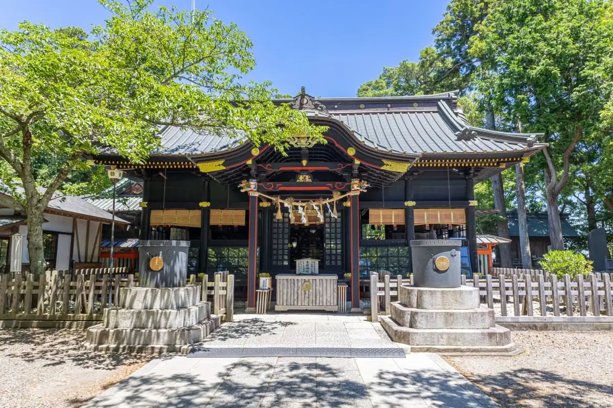
Stay
VILLA UMICHIKA 九十九里一宮
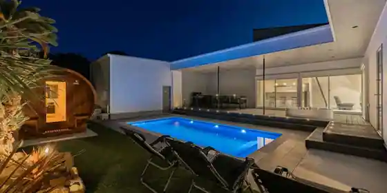
VILLA UMICHIKA Kujukuri Ichinomiya
Inn in Higashinamiken, Ichinomiyamachi with open-air baths and a sauna.
HOTEL R9 九十九里
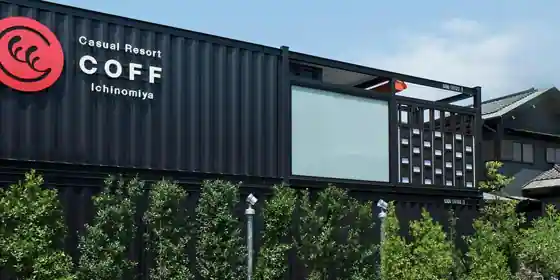
HOTEL R9 Kujukuri
THE Ocean’s Villa 一宮
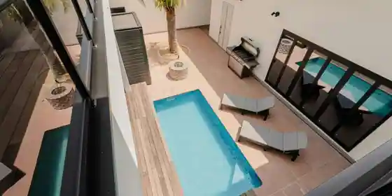
THE Ocean s Villa Ichinomiya
PLAYSTAY一宮
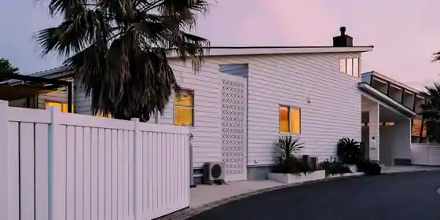
PLAYSTAY Ichinomiya
sawah torami
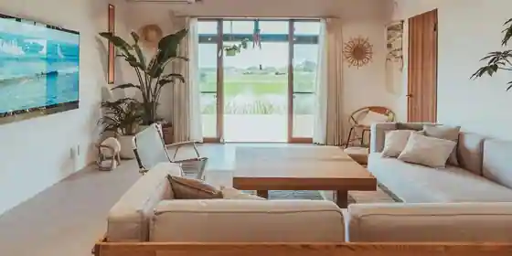
sawah torami
THE NALU
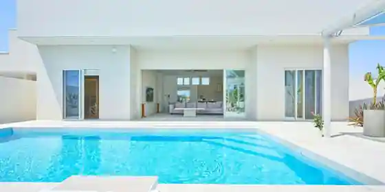
THE NALU
SANU 2nd Home 一宮2nd
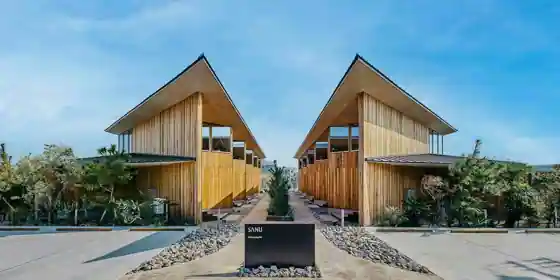
SANU 2nd Home Ichinomiya 2nd
一棟貸古民家宿 まほろ乃
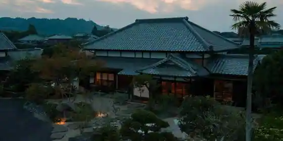
Hitomune Tai Ko Minka Yado Mahoro No
Inn in Higashinamiken, Ichinomiyamachi with a renovated traditional house.
sendouQ
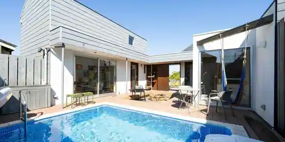
sendouQ
Inn in Sendokyu, Ichinomiyamachi with a sauna.
Ocean's Terrace TORAMII
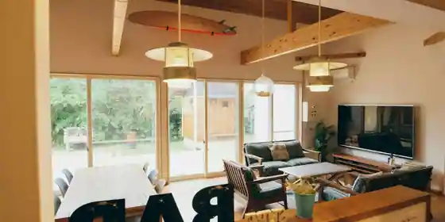
Ocean's Terrace TORAMII
VACATIONHOUSE TORAMI 7521
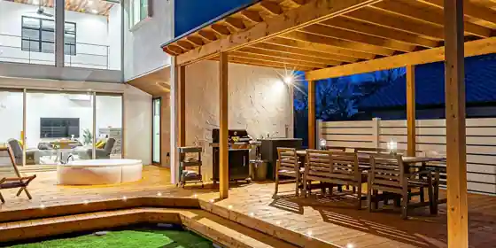
VACATIONHOUSE TORAMI 7521
Inn in Higashinamiken, Ichinomiyamachi with a sauna.
SEA-LIFE TSURIGASAKI
SEA-LIFE TSURIGASAKI
Inn in Higashinamiken, Ichinomiyamachi with a sauna.
Dining
青 AO
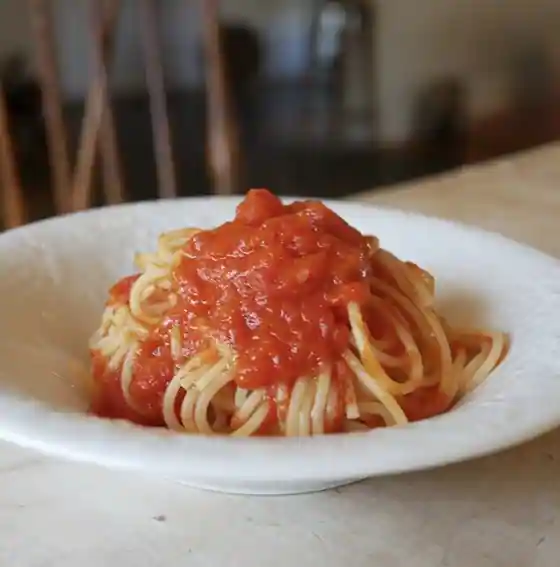
Ao AO
御菓子司 角八本店
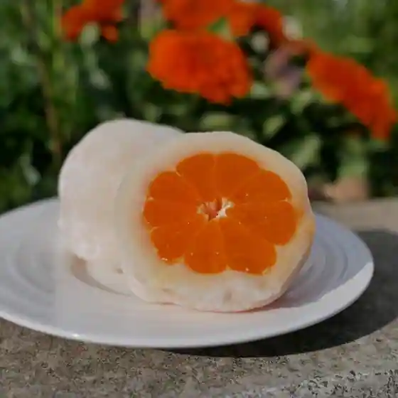
O Kashi Tsukasa Kaku Hachihon
タカラ亭
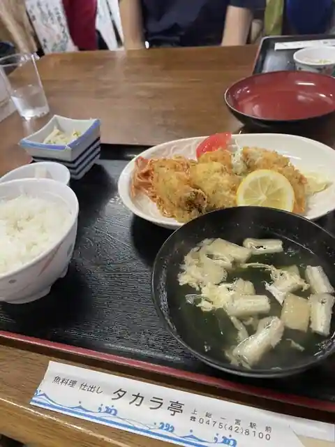
Takara Tei
和菓子司 かねきち
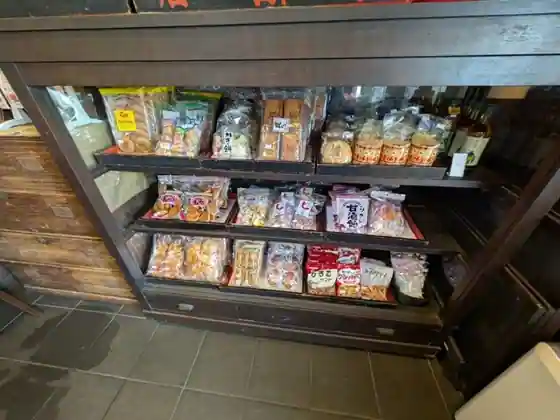
Wagashi Tsukasa Kanekichi
九十九里 麺ドラゴン
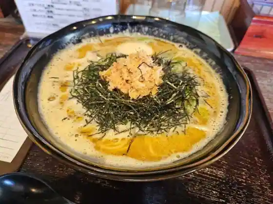
Kujukuri Men Doragon
スーパーキッチン かさや
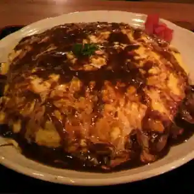
Supa Kitchen Kasaya
赤七屋
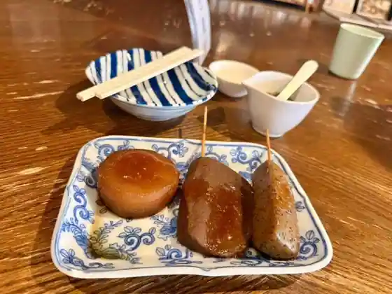
Aka Shichi Ya
いちの家
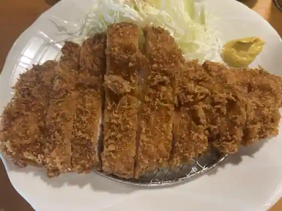
Ichino Ie
Sea Song
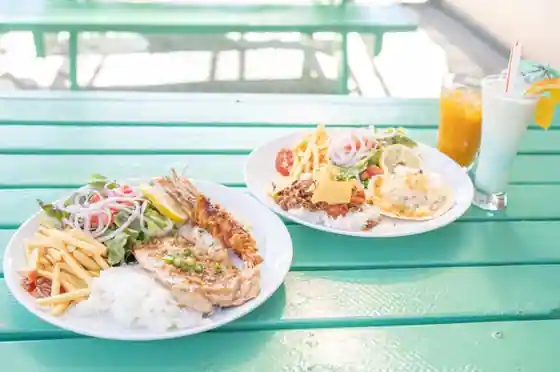
Sea Song
BARRACUDA
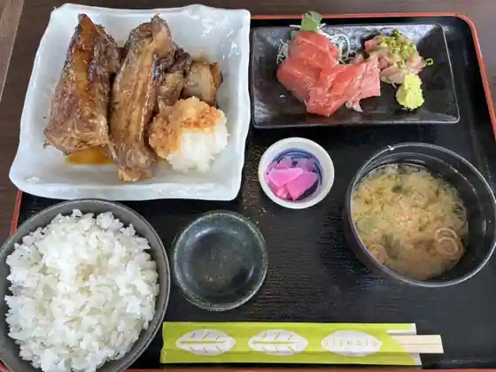
BARRACUDA
Overview Coffee Ichinomiya
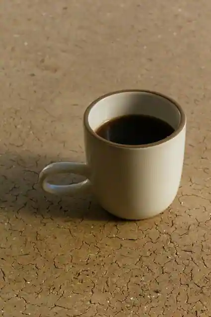
Overview Coffee Ichinomiya
カフェレストラン ポッシュ
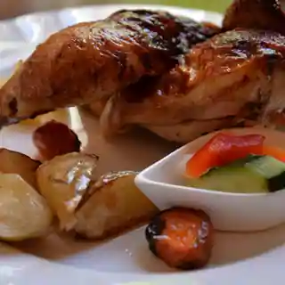
Cafe Restaurant Posshu
うみかぜ
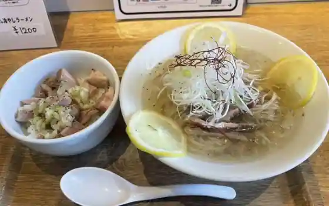
Umikaze
ル・ぺパン
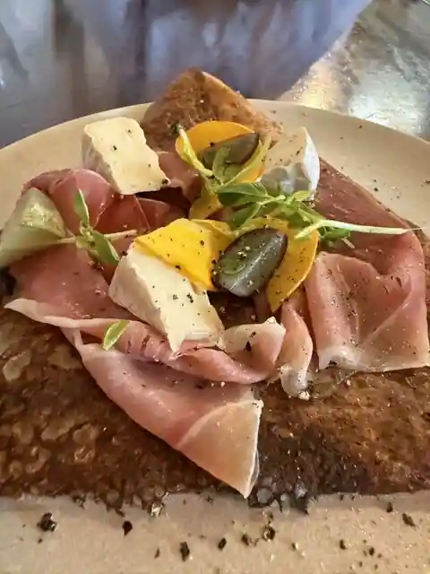
Ru Pe Bakery
キッチン KOBUTA
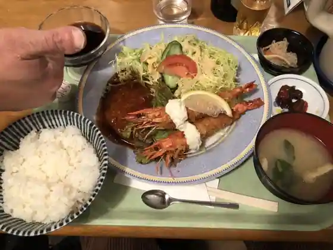
Kitchen KOBUTA
Cafe jf TORAMI
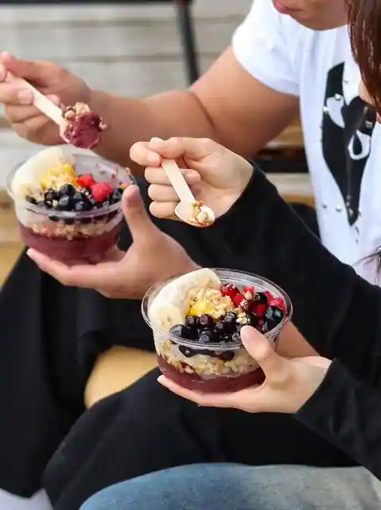
Cafe jf TORAMI
水守食堂
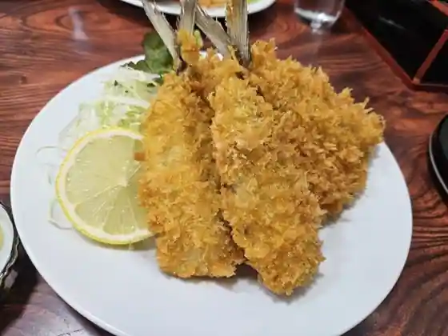
Mizumori Shokudo
Genki Meat Cheers
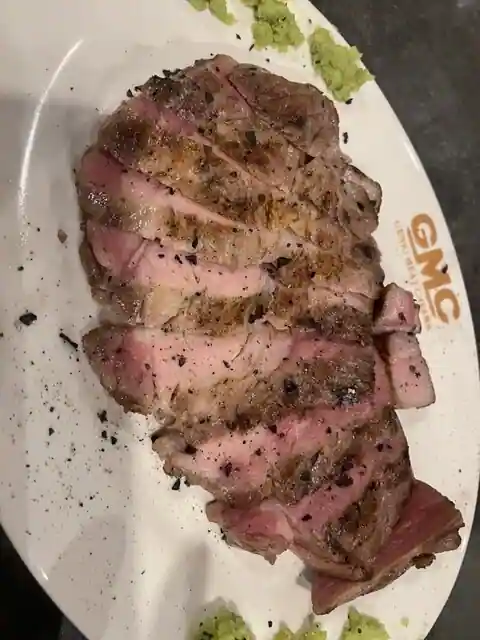
Genki Meat Cheers
サーフガーデン
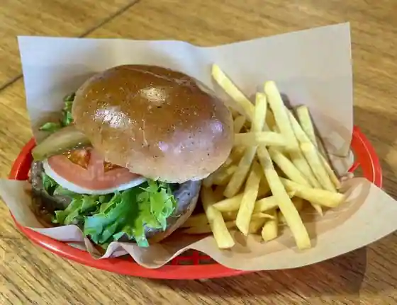
Safu Garden
ホテル一宮シーサイドオーツカ
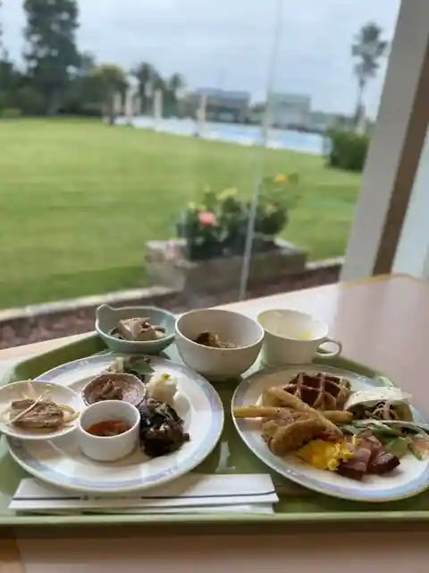
Hotel Ichinomiya Shisaidootsuka
三そば
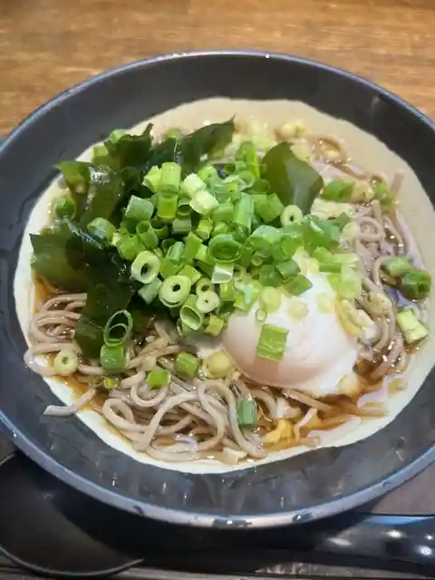
San Soba
食堂マル
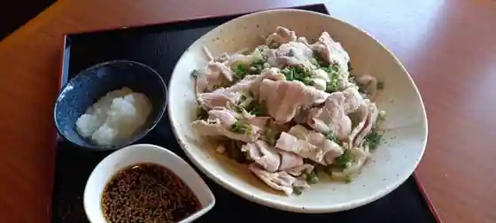
Shokudo Maru
エキスタ
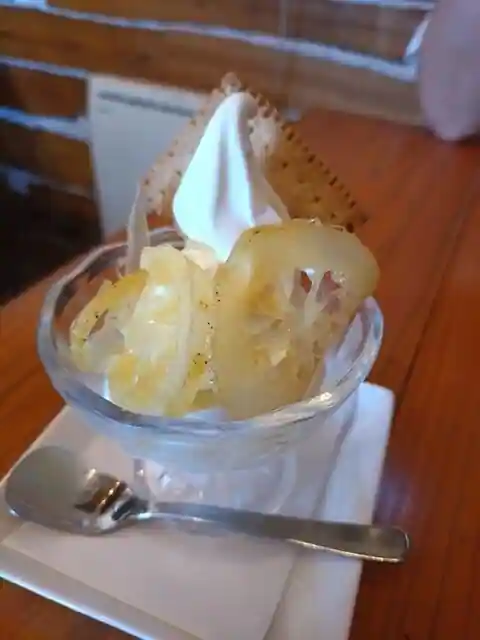
Ekisuta
roll on roll
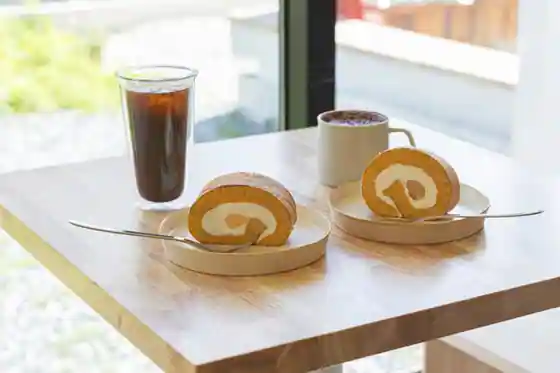
roll on roll
Sights
Kazusa Kuniichi Yuki Miya Tama Mae Shrine
Tsurigasaki Coast
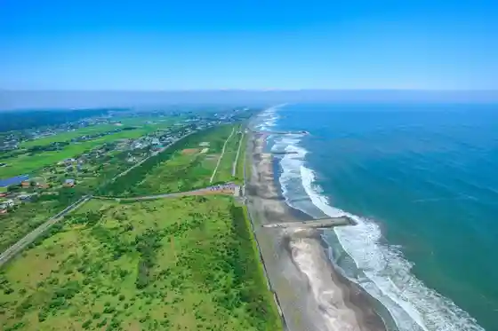
Ichinomiyamachi Coast (Ichinomiyamachi Beach)
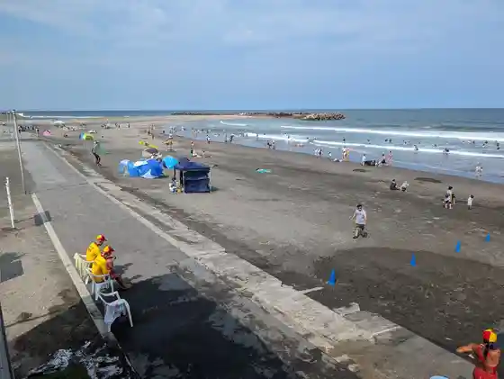
Ichinomiyamachi Joba Center
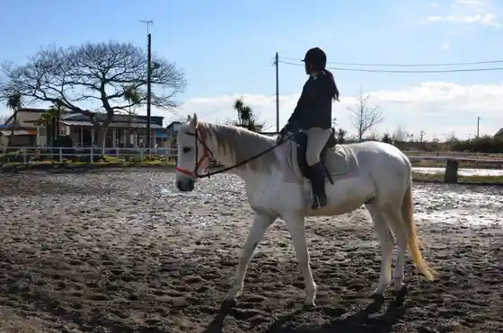
Campsite TORAMI
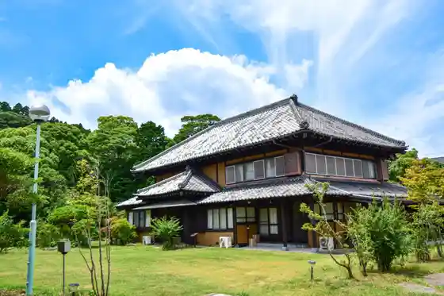
Ocean's camp TORAMII-ichinomiya
Nosambutsu Chokubai Tokoro Na no Hana Higashi Nami Ken Mise
Kami Sen Osanpo Garden
Ichigo Kari no Beriitaun
Ine Hana Shuzo
Ichinomiyamachi Kanko Ichigo Kumiai
Kondo Ichigo Sono